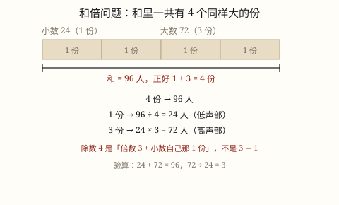

和倍问题
知道两个数的和，还知道一个是另一个的几倍，就先数清「和里一共有几份」，再平均分。和 ÷ (倍数 + 1) 得到的是那 1 份。
| 所属主题 | 解决问题 |
|---|---|
| 所属模块 | 数与代数 |
| 课标学段 | 第三学段（5~6年级） |
| 前置知识 | 常见数量关系（总价、路程） |
| 核心素养 | 模型意识几何直观推理意识运算能力 |
课标要求
| 数与代数·数量关系 | 在实际情境中，运用数和数的运算解决问题；在解决实际问题的过程中，能结合具体情境，选择合适的单位进行简单估算，体会估算在生活中的作用（例11）。 印刷第 21 页 行为动词：运用 |
|---|---|
| 数与代数·数量关系 | 能解决生活中的简单问题，并能对结果的实际意义作出解释，经历探索简单规律的过程（例14），形成初步的模型意识和应用意识。 印刷第 21 页 行为动词：运用 |
| 数与代数·数量关系 | 能运用常见的数量关系解决实际问题，能合理解释结果的实际意义，逐步形成模型意识和几何直观，提高解决问题的能力。 印刷第 24 页 行为动词：运用 |
说明
学校合唱队分两个声部，一共 96 人，高声部人数是低声部的 3 倍。低声部有多少人？这道题给了和（96 人），又给了倍数关系（3 倍），要求这两个数，这类题叫和倍问题。
先画线段图：把低声部看成 1 份，画一小段；高声部是它的 3 倍，就画一样长的 3 段接在后面。整条线段一共 1 + 3 = 4 段，这 4 段合起来是 96 人。
既然 4 段是 96 人，1 段就是 96 ÷ 4 = 24 人，这就是低声部。高声部是 3 段：24 × 3 = 72 人。
写成式子：小数 = 和 ÷ (倍数 + 1)，大数 = 小数 × 倍数，也可以 大数 = 和 − 小数。
式子里那个「+1」最容易记错。它不是凭空加的 1，而是小数自己占的那一份：和里有小数的 1 份，还有大数的 3 份，一共 4 份。
最后回代：24 + 72 = 96（和对了），72 ÷ 24 = 3（倍数也对了）。两个条件都回去，答案才算站得住。
使用场景
分东西：两个班共分到 120 本书，甲班是乙班的 2 倍，各分多少本。
人数分配：两个小组一共多少人，一组人数是另一组的几倍，算各组人数。
库存和进货：两个仓库共存多少箱，甲仓是乙仓的几倍，算各仓存多少。
植树和栽花：校园里两种树一共多少棵，一种的棵数是另一种的几倍。
钱和零花：两个人存的零花钱一共多少，一个人的是另一个人的几倍。
注意点
先确认「和」是哪两个数的和。如果题里一共有三个量，先看清哪两个在比倍数，别把第三个量也加进和里。
看清「是几倍」还是「多几倍」。「甲是乙的 3 倍」→ 甲占 3 份；「甲比乙多 3 倍」→ 甲是乙的 4 倍，占 4 份。这两句话差一整份。
除完得到的是 1 份，也就是被当作标准的那一个量（小数），不是大数。要求大数还得再乘倍数。
除数是「倍数 + 1」。加号千万别写成减号，那是差倍问题的份数，用的是差不是和。
结果要回代两次：加一加看和对不对，除一除看倍数对不对。只验一个条件，错了也发现不了。
为什么是这样

图 1：把和切成一模一样的小份，一共 1 + 3 = 4 份，除 4 就得到一份
算理推导
「大数是小数的 3 倍」这句话的意思，可以换个说法：拿小数去量大数，正好量 3 次，一次不多一次不少。倍数关系天生就是「用一份去量另一份」。
既然能量，那就把整条线段都换成「小数那么长的小段」来数：小数占 1 段，大数占 3 段。看图 1，横条被切成了 4 个一模一样的方块。
这 4 段拼起来正好是 大数 + 小数，也就是题目给的 96。所以和不是一个糊里糊涂的总数，它是 4 个同样大的小段摞在一起。这一步是全部算理的关键。
既然 4 段 = 96，那 1 段 = 96 ÷ 4 = 24。这里的除法是「平均分成 4 份」，不是「96 里包含几个 4」——因为 4 段本来就是 96 切出来的，不是拿来量 96 的。
1 段求出来了，小数就是 1 段 24；大数是 3 段，24 × 3 = 72。到这里，两个数都落地了。
把 4 换成一般的数：如果倍数记作 k，份数就是 1 + k。所以 小数 = 和 ÷ (k + 1)。这个 +1 是从「小数自己也占一份」来的，不是规定。倍数变了，份数跟着变，但「和 ÷ 份数 = 一份」永远不变。
动手实验
用棋子摆一摆：先摆 1 堆 6 颗当小数，再摆 3 堆同样多的当大数，一共 4 堆 24 颗。数一数堆数（4 堆），24 ÷ 4 = 6，正好回到一开始那 6 颗。然后把大数改成 5 堆，重新摆，总数变成 36 颗、堆数变成 6 堆，36 ÷ 6 还是 6。你会发现每一堆的颗数从头到尾没变，变的是堆数，而堆数永远等于「倍数 + 1」。再试着把倍数改成 1 倍（两堆一样多），份数就是 2，和除以 2 正好是两个相等数中的一个。
按场景的例题
例 1（场景：校园生活） 合唱队分声部
学校合唱队两个声部一共 96 人，高声部人数是低声部的 3 倍。两个声部各多少人？
解：把低声部看作 1 份，高声部是 3 份，一共 1 + 3 = 4 份。低声部 = 96 ÷ 4 = 24（人），高声部 = 24 × 3 = 72（人）。回代：24 + 72 = 96，72 ÷ 24 = 3。
答：低声部 24 人，高声部 72 人。
例 2（场景：购物消费） 团购拼单买水果
班里团购两箱水果一共花了 144 元，大箱的价钱是小箱的 5 倍。两箱各多少元？
解：小箱 1 份，大箱 5 份，共 1 + 5 = 6 份。小箱 = 144 ÷ 6 = 24（元），大箱 = 24 × 5 = 120（元）。回代：24 + 120 = 144，120 ÷ 24 = 5。
答：小箱 24 元，大箱 120 元。
例 3（场景：绿化照明） 校园里两种树
校园里杨树和柳树一共 128 棵，杨树的棵数是柳树的 3 倍。两种树各多少棵？
解：柳树 1 份，杨树 3 份，共 4 份。柳树 = 128 ÷ 4 = 32（棵），杨树 = 32 × 3 = 96（棵）。回代：32 + 96 = 128，96 ÷ 32 = 3。
答：柳树 32 棵，杨树 96 棵。
例 4（场景：农业生产） 两个大棚的收成
两个蔬菜大棚一共收了 960 千克黄瓜，甲棚的产量是乙棚的 7 倍。两棚各收多少千克？
解：乙棚 1 份，甲棚 7 份，共 1 + 7 = 8 份。乙棚 = 960 ÷ 8 = 120（千克），甲棚 = 120 × 7 = 840（千克）。回代：120 + 840 = 960，840 ÷ 120 = 7。
答：乙棚 120 千克，甲棚 840 千克。
常用推论
小数 = 和 ÷ (倍数 + 1)，大数 = 小数 × 倍数。求出小数后，大数还可以用 和 − 小数 得到，两条路互相核对。
总份数 = 倍数 + 1。倍数越大，总份数越多，每一份就越小——同样多的和，分成更多份，一份自然更少。
大数 = 和 ÷ (倍数 + 1) × 倍数，也就是 和 × 倍数 ÷ (倍数 + 1)。一次算完，适合倍数不大的题。
当倍数是 1 时，两数相等，份数是 2，和 ÷ 2 就是每个数。公式在这个极端情形下依然成立。
反过来：倍数 = 大数 ÷ 小数，和 = 小数 × (倍数 + 1)。知道份数和一份，也能算出和来。
易错点
错两个数的和是 96，大数是小数的 3 倍。求小数，算成 96 ÷ (3 - 1) = 48。
为什么错减 1 得到的是「大数比小数多出来的 2 份」，那是差倍问题的份数。和里装的是小数的 1 份加大数的 3 份，一共 4 份，不是 2 份。用减 1 去分和，等于把和当成了差，48 既不是 24 也不是 72。
正确96 ÷ (3 + 1) = 24（小数），24 × 3 = 72（大数）。回代：24 + 72 = 96，72 ÷ 24 = 3。
错甲比乙多 3 倍，甲乙一共 100 元。求乙，算成 100 ÷ (3 + 1) = 25（元）。
为什么错「甲比乙多 3 倍」是说甲 = 乙 + 3 个乙 = 4 个乙，甲占 4 份；而「甲是乙的 3 倍」才是甲占 3 份。这两句话差整整一份，份数应该是 1 + 4 = 5。
正确先把「多 3 倍」翻成「是 4 倍」：100 ÷ (4 + 1) = 20（元）是乙，甲 = 20 × 4 = 80（元）。回代：20 + 80 = 100。
错算出 24 就答「高声部 24 人，低声部 72 人」。
为什么错24 是 1 份，对应的是被当作标准的那一个量。「是……的 3 倍」这句话里，跟在「是」后面、被拿来当标准的才是 1 份，这道题里是低声部。1 份的身份认错，两个答案就整体对调。
正确低声部 24 人（1 份），高声部 72 人（3 份）。检查办法：倍数句子里被「的」字跟着的那个量，就是 1 份。
直观理解
和倍问题的动作是把和切成整份。两个数一大一小不好分，但一旦知道「大的是小的 3 倍」，整条线段就能切成一模一样的 4 块，每块都一样大，除法才有意义。这个念头和邻家两道题是一套的：和差是「补上差让两个数一样大」，和倍是「把和切成一样大的份」，差倍是「把差切成一样大的份」——三种题都在做同一件事，先制造出「一样大」的东西，再平均分。所以别急着背「和 ÷ (倍 + 1)」，先问自己：这道题里，什么东西是一样大的？一共有几份？
和倍先数几份整，一倍几倍加起来；和除以份数得一份，一份乘倍数得大数。加一不是减一，认准小数那一份。